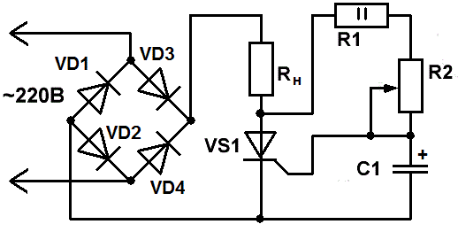
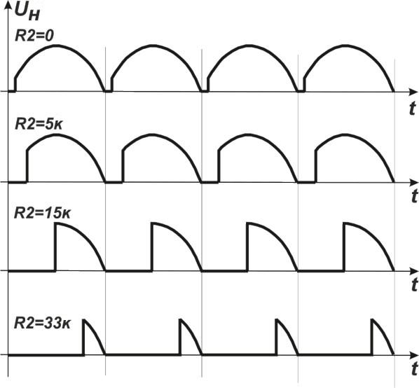
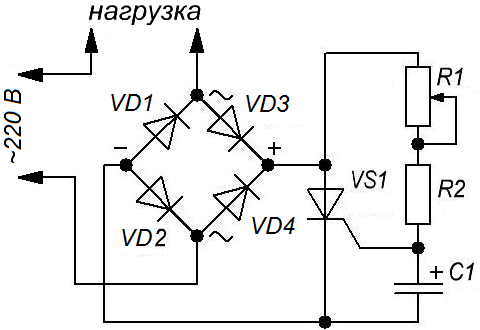
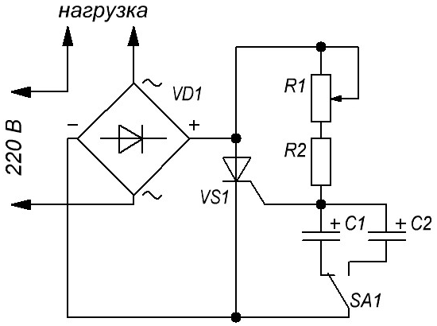
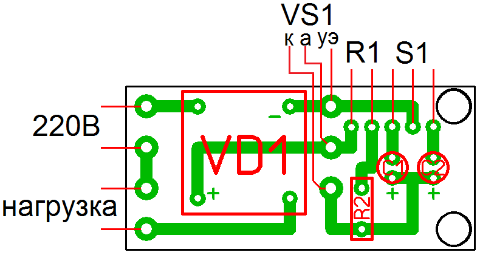
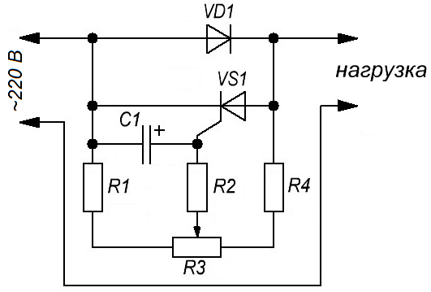
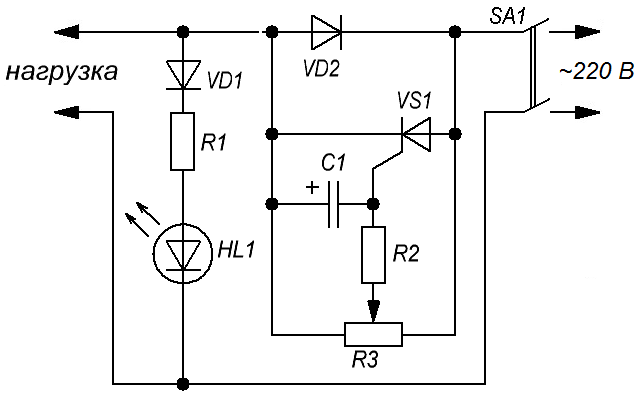
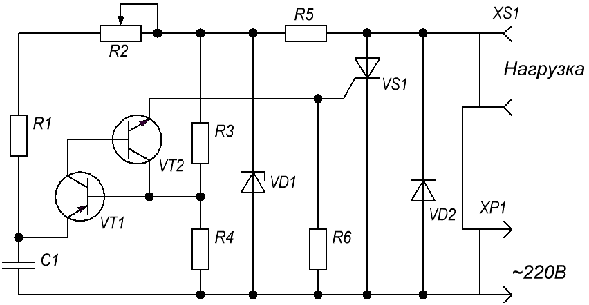
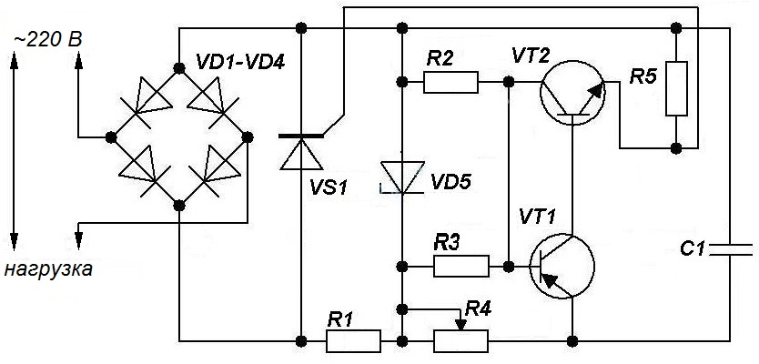

Регуляторы мощности на одном тринисторе
Регулятор мощности на тринисторе (вариант №1)
На рис. 1 приведена одна из распространенных схем регулятора мощности на тринисторах. Такие устройства можно использовать для регулировки температуры жала паяльника, яркости ламп накаливания.

Таблица 1
| Обозначение | Наименование | Номинал | Количество |
|---|---|---|---|
| C1 | Конденсатор электролитический | 10 мкФ × 50В | 1 |
| R1 | Резистор постоянный | 2,4 кОм/2 Вт | 1 |
| R2 | Резистор переменный | 33 кОм | 1 |
| VD1-VD4 | Диод | КД105 | 4 |
| VS1 | Тринистор | КУ201Б | 1 |
Диодный мост VD1-VD4 преобразует переменное сетевое напряжение в однополярное удвоенной частоты, что позволяет регулировать напряжение на нагрузке в течение обоих полупериодов напряжения сети.
В качестве управляющего напряжения используется часть анодного напряжения тринистора, поступающая через резисторы R1 и R2 на управляющий электрод. Резистором R2 изменяют момент открывания тринистора VS1 и, следовательно, среднее значение напряжения на нагрузке.
Чем меньше будет значение R2, тем больше будет ток, поступающий на управляющий электрод, тем раньше откроется тиристор. При R2=0 - мощность в нагрузке максимальна (верхняя диаграмма на рис. 2).
При повороте ручки переменного резистора R2, его сопротивление увеличивается, ток на управляющем электроде уменьшается, поэтому тиристор откроется уже не в начале полуволны, а спустя некоторое время, когда ток достигнет необходимого уровня.
Помимо этого, при увеличении сопротивления R2, управляющий сигнал получает дополнительную задержку, благодаря действию фазосдвигающей RC-цепочки, образованной R1, R2 и С1, что, в свою очередь, позволяет ещё больше расширить диапазон регулировки мощности.

Регулятор мощности на тринисторе (вариант №2)
На рисунке 3 дана схема регулятора мощности, который позволяет изменять напряжение на нагрузке в широких пределах. Нагрузка в нем включается в сеть через двухполупериодный выпрямитель, собранный по мостовой схеме на диодах VD1—VD4. Выпрямитель включен так, что при закрытом тринисторе VS1 ток через нагрузку протекать не будет. Для открывания тринистора применена зарядная цепь из резисторов и конденсатора. На нее поступает выпрямленное диодным мостом напряжение. Как только конденсатор зарядится до определенного напряжения, тринистор откроется и замкнет диагональ моста. В какой момент того или иного полупериода сетевого напряжения откроется тринистор, зависит от постоянной времени зарядной цепи, которую можно плавно изменять переменным резистором R1.
Такой способ управления тринистором называется фазовым, так как изменяется фаза напряжения на управляющем электроде по отношению к фазе напряжения на аноде тринистора.

Таблица 2
| Обозначение | Наименование | Номинал | Количество | Примечание |
|---|---|---|---|---|
| C1 | Конденсатор электролитический | 10 мкФ × 50В | 1 | |
| R1 | Резистор переменный | 68 кОм | 1 | |
| R2 | Резистор постоянный | 10 кОм/2 Вт | 1 | |
| VD1-VD4 | Диод | Д226Б | 4 | |
| VS1 | Тринистор | КУ201Л | 1 | КУ201К |
При указанных на схеме номиналах деталей напряжение на нагрузке можно изменять примерно от 40 до 210 В. Мощность нагрузки — до 60 Вт.
Если все детали исправны и схема собрана правильно, регулятор начнет работать сразу. Можно отградуировать шкалу переменного резистора с помощью вольтметра переменного тока.
Чтобы к регулятору можно было подключать более мощную нагрузку необходимо заменить диоды Д226Б на Д245А или установить выпрямительный мост КЦ402, КЦ403, КЦ404, КЦ405 с буквенными индексами А-Г, Ж, И.
Регулятор мощности на тринисторе (вариант №3)
В отличии от варианта №2 регулятора мощности (рис. 3), в варианте №3 (рис. 4) имеется возможность изменять емкость конденсатора.

Таблица 3
| Обозначение | Наименование | Номинал | Количество | Примечание/замена |
|---|---|---|---|---|
| C1 | Конденсатор электролитический | 470 мкФ × 16В | 1 | |
| C2 | Конденсатор электролитический | 100 мкФ × 16В | 1 | |
| R1 | Резистор переменный | 5 кОм | 1 | |
| R2 | Резистор постоянный | 10 кОм/2 Вт | 1 | |
| VD1 | Диодный мост | BR310 | 1 | КЦ402-КЦ405 (А — С, Ж, И) |
| VS1 | Тринистор | КУ201К | 1 | КУ201Л |
| SA1 | Переключатель | 1 | на 2 положения |
Диодный мост можно собрать из диодов с максимальным обратным напряжением не менее 400 В. Тринистор в случае большой нагрузки нужно установить на теплоотвод.
При данных номиналах деталей:
- на первом диапазоне 115 В … 145 В
- на втором диапазоне 154 В … 174 В.

Регулятор мощности на тринисторе (вариант №4)
В схеме регулятора мощности на рисунке 6 в положительный полупериод сетевого напряжения ток проходит через диод и нагрузку. В отрицательный полупериод напряжения диод закрыт, и ток через нагрузку не идет. Если бы не было цепи из тринистора, конденсатора и резисторов, включенной параллельно диоду, то на нагрузке выделялась бы мощность вдвое меньше той, что выделяется при питании паяльника прямо от сети. Благодаря этим элементам мощность на нагрузке можно плавно регулировать в определенных пределах.
В отрицательный полупериод напряжения будет открываться тринистор и подключать нагрузку к сети. Момент открывания тринистора зависит от момента появления на управляющем электроде напряжения, соответствующего напряжению включения. А это, в свою очередь, зависит от напряжения, снимаемого с движка переменного резистора R3, и емкости конденсатора С1. Конденсатор здесь выполняет роль элемента, сдвигающего по фазе напряжение на управляющем электроде относительно сетевого, приложенного к аноду тринистора. Поэтому такое управление тринистором носит название амплитудно-фазового (по амплитуде — резистором R3, по фазе — конденсатором).

Таблица 4
| Обозн. | Наименование | Номинал | Кол-во | Примечание |
|---|---|---|---|---|
| C1 | Конденсатор электролитический | 10 мкФ × 50В | 1 | |
| R1 | Резистор постоянный | 2,2 кОм/0,5 Вт | 1 | 1 Вт |
| R2 | Резистор постоянный | 5,1 кОм/0,5 Вт | 1 | 1 Вт |
| R3 | Резистор переменный | 10 кОм | 1 | |
| R4 | Резистор постоянный | 10 кОм/0,5 Вт | 1 | 1 Вт |
| VD1 | Диод | Д226Б | 1 | Д7Ж максимальный прямой ток не менее 300 мА, максимальное обратное напряжение более 300 В |
| VS1 | Тринистор | КУ101Б | 1 | КУ101Г, КУ101Е |
В зависимости от момента включения тринистора будет изменяться и продолжительность его работы во время отрицательного полупериода. В результате средний ток, протекающий через нагрузку, будет изменяться, а с ним и выделяемая на нагрузке мощность. Поэтому подобные регуляторы называются регуляторами мощности.
При перемещении движка переменного резистора напряжение на нагрузке должно изменяться примерно от 150 до 210 В (при сетевом напряжении 220 В). Данныйй регулятор рассчитан на работу с нагрузкой, мощность которой не превышает 25 Вт.
С более мощным диодом, например Д245А, и тринистором КУ201Д-КУ201Л регулятор способен управлять нагрузкой до 200 Вт. При этом резистор R1 должен быть сопротивлением 3,3 кОм.
Налаживание регулятора состоит в проверке и подборе пределов регулирования напряжения на нагрузке. Подключив параллельно нагрузке вольтметр переменного тока, определяют крайние значения напряжения при вращении ручки переменного резистора. Подбирают сопротивление резистора R1 так, чтобы минимальное напряжение на нагрузке было не ниже 150 В. После этого можно проградуировать шкалу — нанести на корпусе регулятора против метки на ручке резистора деления, соответствующие выходному напряжению.
Регулятор мощности на тринисторе (вариант №5)
За основу варианта №5 регулятора мощности на тринисторе была взята схема с амплитудно-фазовым принципом работы и дополнена индикатором включения регулируемой фазы, что упрощает регулировку за счёт визуализации по яркости свечения светодиода. В данном варианте можно использовать нагрузку мощностью не более 40 Вт.
Использование для регулировки одного полупериода себя оправдывает при использовании в качестве нагрузки паяльника. Паяльник всегда должен быть нагретым, даже если им какое-то время не пользуются.

Таблица 5
| Позиционное обозначение |
Наименование | Номинал | Кол-во | Примечание (Замена) |
|---|---|---|---|---|
| С1 | Конденсатор электролитический | 22 мкФ × 63 В | 1 | |
| НL1 | Светодиод | АЛ307 | 1 | |
| R1 | Резистор постоянный | 47 кОм/0,5 Вт | 1 | |
| R2 | Резистор постоянный | 10 кОм/0,5 Вт | 1 | |
| R3 | Резистор переменный | 47 кОм | 1 | СП-04 0,5 Вт |
| VD1 | Диод | КД209А | 1 | КД209Б, КД105Б, |
| VS1 | Тринистор | КУ101Е | 1 |
Индикатор зажигается при напряжении на нагрузке 150...160 В и далее яркость плавно увеличивается при увеличении напряжения до 220 В. Ниже 150..160 В индикатор гаснет, вернее, еле заметно подсвечивается, напряжение при этом на нагрузке соответствует 127...130 В в зависимости от напряжения в сети. Для каждого паяльника своё оптимальное напряжение.
Регулятор мощности на тринисторе (вариант №6)
На рис. 8 приведена схема регулятора мощности для нагрузки с мощностью до 300 Вт. Когда тиристор закрыт, на жало подается половина напряжения питания. Резистор R2 регулирует температуру в диапазоне 50...100%.

Таблица 6
| Обозначение | Наименование | Номинал | Кол-во | Примечание |
|---|---|---|---|---|
| С1 | Конденсатор | 0,1 мкФ |
1 | |
| R1 | Резистор постоянный | 3,3 кОм - 0,25 Вт | 1 | 0,25-0,5 Вт |
| R2 | Резистор переменный | 100 кОм | 1 | |
| R3, R4 | Резистор постоянный | 2,2 кОм - 0,25 Вт | 2 | 0,25-0,5 Вт |
| R5 | Резистор постоянный | 30 кОм - 2 Вт | 1 | |
| R6 | Резистор постоянный | 100 Ом - 0,25 Вт | 1 | 0,25-0,5 Вт |
| VD1 | Стабилитрон | Д814Д | 1 | |
| VD2 | Диод | 1N4004 | 1 | |
| VT1 | Транзистор биполярный | КТ361Б | 1 | |
| VT2 | Транзистор биполярный | КТ315Б | 1 | |
| VS1 | Тринистор | КУ202Н | 1 |
При проверке в качестве нагрузки подключите лампочку накаливания.
Регулятор мощности на тринисторе (вариант №7)
Данный регулятор мощности (рис. 9) можно использовать для различных целей: регулирование скорости вращения двигателя, изменение температуры нагрева паяльника и т.д. Наиболее эффективно данный прибор будет справляться с резистивной нагрузкой – лампы, нагреватели и т.д. Потребители тока индуктивного характера тоже можно подключать, но при слишком малой его величине надёжность регулировки снизится.

Таблица 7
| Обозначение | Наименование | Номинал | Количество | Примечание/замена |
|---|---|---|---|---|
| C1 | Конденсатор | 0,47 мкФ × 250В | 1 | |
| R1 | Резистор | 22 кОм - 2 Вт | 2 | |
| R2 | Резистор | 10 кОм - 0,5 Вт | 1 | |
| R3 | Резистор | 2,2 кОм - 0,5 Вт | 1 | |
| R4 | Резистор переменный | 22 кОм | 1 | |
| R5 | Резистор | 1 кОм - 0,5 Вт | 1 | |
| VD1 — VD4 | Диод | КД202 | 4 | |
| VD5 | Стабилитрон | Д814Г | 1 | |
| VS1 | Тринистор | КУ202Л | 1 | |
| VT1 | Транзистор биполярный | КТ361Г | 1 | |
| VT2 | Транзистор биполярный | КТ315Г | 1 |
При использовании, указанных на схеме выпрямительных диодов, прибор может выдержать нагрузку до 5 А (примерно 1 кВт) с учетом наличия радиаторов. Для увеличения мощности подключаемого устройства нужно использовать другие диоды или диодные сборки, тринисторы рассчитанные на необходимый ток.
Стабилитрон Д814Г можно заменить на любой, с напряжением стабилизации 12-15 В.
Источники:
vpayaem.ru - Тиристо. Описание, принцип работы, свойства и характеристики
unradio.ru - Регуляторы мощности
radiokot.ru - Регулятор мощности в вилке паяльника